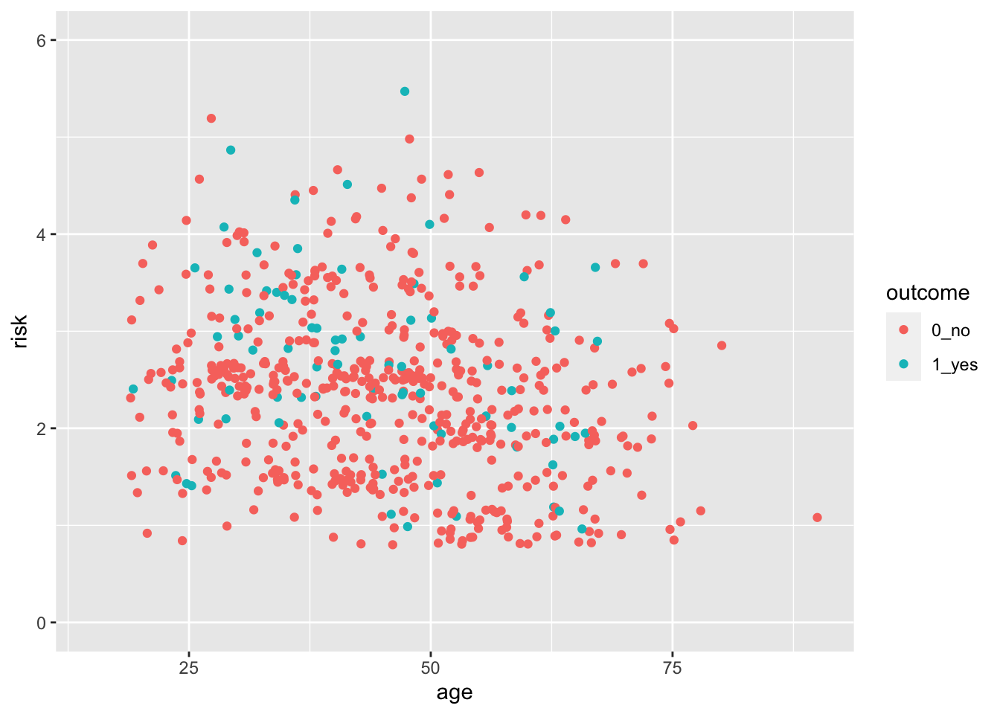
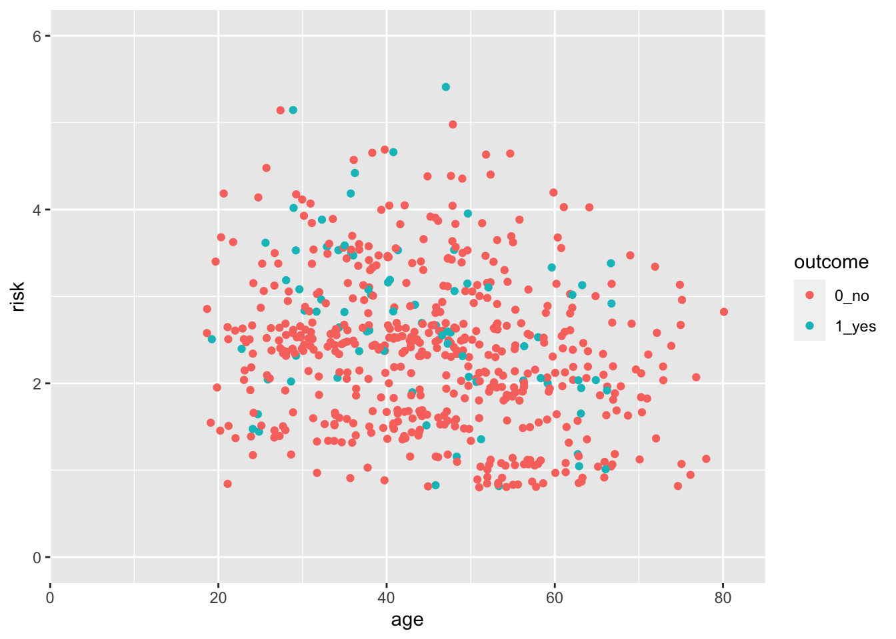
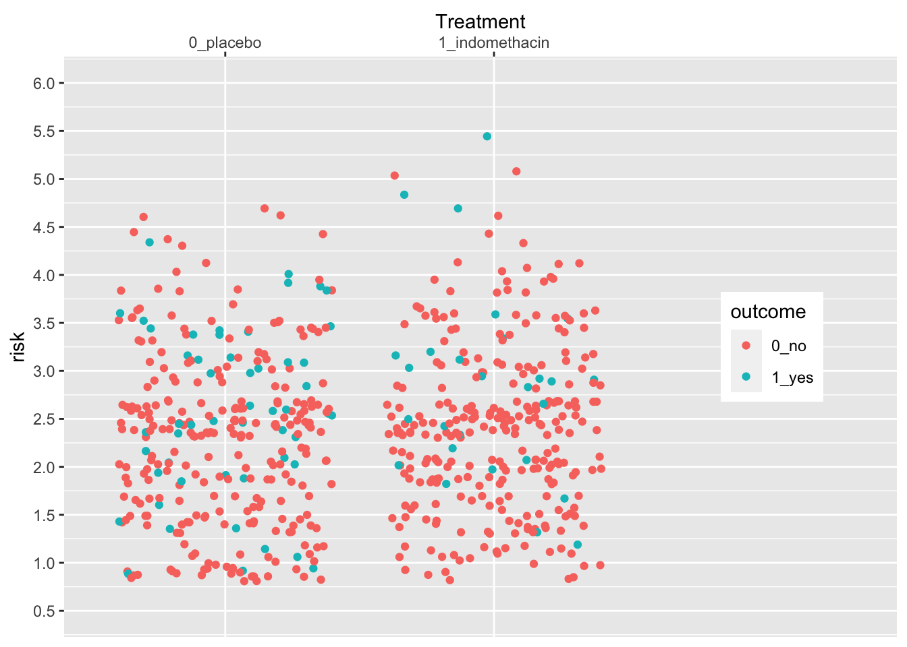
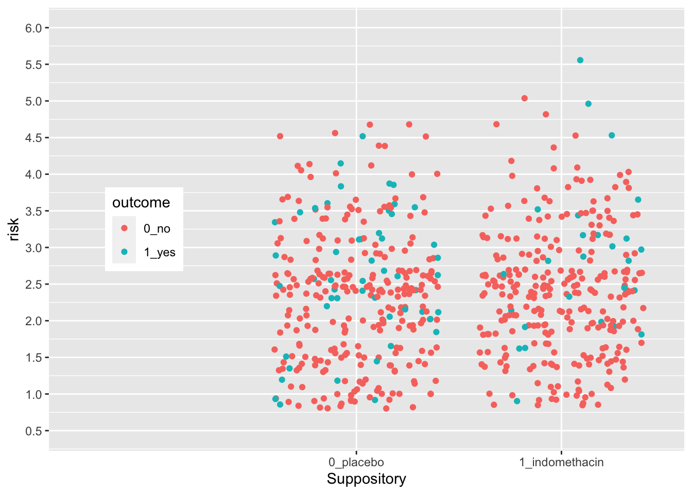
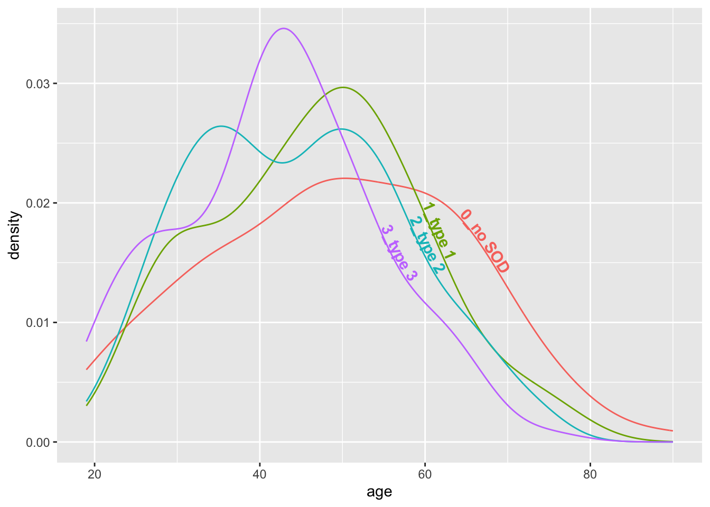
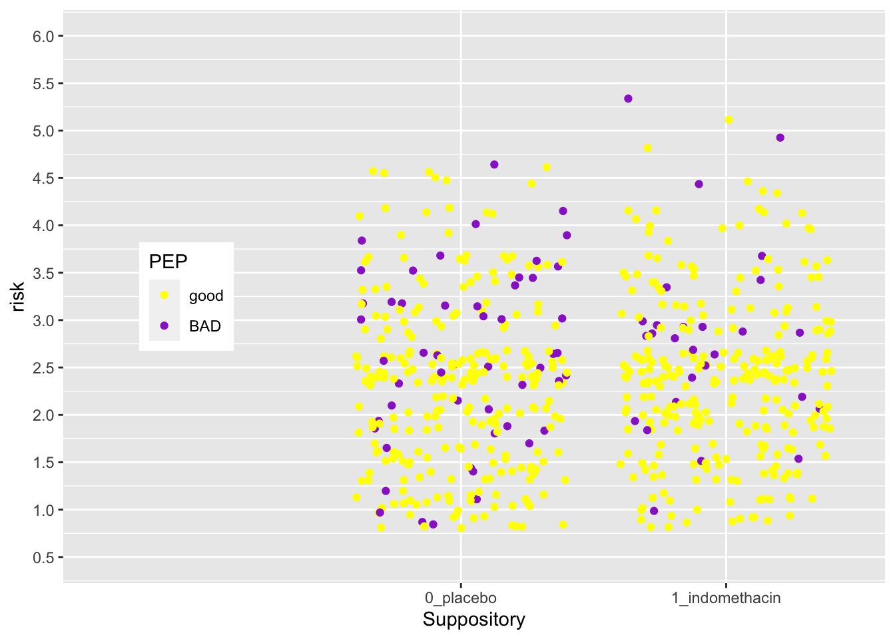

Chapter 23 Extensions to ggplot
The {ggplot2} package is made to be extensible - so that other people can write packages that add new (often niche) geoms for specific purposes. This chapter is a short tour of some of the neat extensions people have written, and when and where they can be useful. Please check out the links to the individual packages to learn more, as we will frequently just scratch the surface of what is available.
23.1 Goals for this Chapter
- learn how and why to use waffle plots
- learn how and when to use alluvial plots
- learn how and when to use lollipop plots -learn how and when to use dumbbell plots
23.2 Packages Needed for this chapter
You will need {tidyverse}, {medicaldata}, {waffle}, {ggalluvial}, {ggalt}, {ggrepel}, {ggforce}, {ggalt}, {ggtext}. {ggsignif}, {ggbump}, {survminer}, {ggcorrplot}, {plotROC}, {directlabels}, {geomtextpath}, {ggheatmap}, {ggQC}, {ggupset}, {plotly}, and {gganimate}.
# install.packages('tidyverse')
# install.packages('medicaldata')
library(tidyverse)
library(medicaldata)
library(ggrepel)
library(ggforce)
library(ggalt)
library(ggtext)
library(ggsignif)
library(ggbump)
library(survminer)
library(ggmosaic)
library(ggcorrplot)
library(plotROC)
library(directlabels)
library(geomtextpath)
library(ggheatmap)
library(ggQC)
library(ggupset)
library(ComplexUpset)
library(plotly)
library(gganimate)23.3 A Flipbook of Where We Are Going With ggplot Extensions
See the flipbook below, which contains some examples of what you can do with ggplot extensions.
You can use the the icons in the bottom bar to expand to full screen or share this flipbook. If you are in full screen mode, you can use the Home button to go the the first slide and the End button to go to the last slide, and the Escape key to get out of full screen mode.
23.4 A Waffle Plot
Why is this better than a bar plot or a dotplot?
In order to represent counts, or individual participants in a trial, a bar plot is a bit deceiving. It appears to be a continuous variable. But each participant in a clinical trial is a discrete individual. A bar plot can be helpful for very large numbers, but for manageable numbers it is a bit of a misrepresentation.
A dotplot, with geom_dotplot, would seem like a good option, but it only displays proportions, not counts.
In order to show outcomes for distinct individual participants, a waffle plot comes in handy. These have become quite popular in data journalism to represent counts. Let’s start with a waffle plot of
indo_rct <- medicaldata::indo_rct
scaler <- 1
indo_data <- indo_rct %>% group_by(outcome, rx) %>% count() %>%
mutate(n = n/scaler)
indo_data %>%
#mutate(site = case_when(site == "1_UM" ~ "Michigan", site == "2_IU" ~ "Indiana", site == "3_UK" ~ "Kentucky", site == "4_Case" ~ "Case")) %>%
mutate(rx = str_sub(rx, 3L, 10L)) %>%
ggplot(aes(fill = outcome, values = n)) +
geom_waffle(color = "white", size=0.25, n_rows = 10,
flip = TRUE, radius = unit(0.7, units = "mm")) +
facet_wrap(~rx, nrow = 1,
strip.position = "bottom") +
scale_x_discrete() +
scale_y_continuous(breaks = seq(10, 40, 10),
labels = function(x) format(x * 10*scaler, scientific = F),
expand = c(0,0)) +
scale_fill_manual(values = c("#1a85ff", "#d41159" )) +
coord_equal() +
labs(
title = "Post-ERCP Outcomes by Treatment: <br><span style = 'color:#d41159;'>Pancreatitis</span>, or <span style = 'color:#1a85ff;'>No Event</span>, <br>in the Rectal Indomethacin Trial",
subtitle = sprintf("One square = %s Outcome, Each Row = 10 Outcomes", scaler),
x = "",
y = "",
caption = "Data: NEJM 2012; 366:1414-1422, Elmunzer"
) +
theme_minimal() +
#theme_ipsum_rc()+
theme(panel.grid = element_blank(),
panel.grid.major = element_blank(),
panel.grid.minor = element_blank(),
axis.ticks.y = element_line(),
plot.title = element_markdown(),
legend.position = "none") +
guides(fill = guide_legend(reverse = TRUE))
The waffle plot is an interesting hack of ggplot. The geom_waffle() is actually a faceted plot, with one row of facets (examine the code above). You can change the scaler constant to make each square count for N cases. You can learn more about the many capabilities of the {waffle} package - including pictograms and an alternative to pie charts - here.
Note that we have used colors in the title in place of a legend, by coloring the outcomes with the corresponding colors, using the {ggtext} extension package, which allows you to add color, backgrounds, images, bold face, or italic face to text in ggplots, using markdown/HTML tags. You can learn more about the many capabilities of the {ggtext} package and what it can do here.
23.5 An Alluvial Plot
An alluvial plot depicts flow, like a river, which can split off branches and re-unite streams. This king of plot can be helpful to show patient flow from one state to the next.
datafr <- tibble::tribble(
~gender, ~triage, ~next_day, ~outcome, ~count,
"Male", "ER", "Hospitalized", "Survived", 211,
"Male", "ER", "Hospitalized", "Survived", 43,
"Male", "ER", "Discharged", "Died", 280,
"Male", "ER", "Discharged", "Died", 15,
"Male", "Observation", "Hospitalized", "Survived", 67,
"Male", "Observation", "Hospitalized", "Died", 11,
"Male", "Observation", "Discharged", "Survived", 415,
"Male", "Observation", "Discharged", "Died", 5,
"Female", "ER", "Hospitalized", "Survived", 219,
"Female", "ER", "Hospitalized", "Survived", 33,
"Female", "ER", "Discharged", "Died", 250,
"Female", "ER", "Discharged", "Died", 45,
"Female", "Observation", "Hospitalized", "Survived", 88,
"Female", "Observation", "Hospitalized", "Died", 27,
"Female", "Observation", "Discharged", "Survived", 402,
"Female", "Observation", "Discharged", "Died", 14) %>%
mutate(gender = as_factor(gender),
triage = as_factor(triage),
next_day = as_factor(next_day),
outcome = as_factor(outcome))
ggplot(datafr,
aes(y = count, axis1 = gender, axis2 = triage,
axis3 = next_day)) +
geom_alluvium(aes(fill = outcome), width = 1/12) +
geom_stratum(width =1/12, fill = "black", color = "grey") +
geom_label(stat = "stratum", aes(label = after_stat(stratum))) +
scale_x_discrete(limits = c("gender", "triage", "next_day"), expand = c(.10, .10)) +
ggtitle("Patients Presenting with Chest Pain") +
scale_fill_manual(values = c("#1a85ff", "#d41159" ))
Now try this yourself. Copy the code above (click on the copy icon in the top right of the code chunk), paste it into your RStudio IDE, and edit to:
- change the x axis so that it starts at age 15, and ends at 90. Click on the
Solutionbutton to toggle showing or hiding the solution.
indo_rct %>%
ggplot() +
aes(x = age, y = risk, color = outcome) +
geom_jitter() +
scale_y_continuous(limits = c(0,6)) +
scale_x_continuous(limits = c(15,90))## Warning: Removed 1 rows containing missing values
## (geom_point).
23.6 Lollipop Plots
While bar charts are quite popular for comparing continuous variables across categories, they have limitations. Humans are good at comparing length, but the bars add width, which is a distractions. Bar charts are also often used for counts, and it is not always clear whether a continuous or a discrete count variable is being plotted (a waffle chart can clear up discrete counts). For a continuous variable, you have a single point estimate (the end of the bar), and it is better to emphasize this estimate, without giving up the benefit of comparing lengths (which humans are good at). A lollipop plot emphasizes the continuous value, while de-emphasizing the width of a bar. Let’s look at an example below.
medicaldata::covid_testing %>%
mutate(positive = case_when(ct_result < 45 ~ 1,
ct_result >= 45 ~ 0)) %>%
group_by(demo_group) %>%
count(positive) %>%
filter(!is.na(positive)) %>%
mutate(freq = n/sum(n)) %>%
filter(positive==1) %>%
ggplot() +
aes(x = fct_reorder(demo_group, freq), y = freq) +
geom_lollipop(point.size = 5, point.colour = "red") +
scale_y_continuous(labels = scales::percent_format(scale = 100)) +
labs(y = "Percent Positive", x = "Demographic Category")
Now try this yourself. Copy the code above (click on the copy icon in the top right of the code chunk), paste it into your RStudio IDE, and edit to:
- Change the x axis so that it starts at age 0, and ends at 85.
- Make the x-axis expansion multiplier zero (not the default of 0.05).
Click on the Solution button to toggle showing or hiding the solution.
indo_rct %>%
ggplot() +
aes(x = age, y = risk, color = outcome) +
geom_jitter() +
scale_y_continuous(limits = c(0,6)) +
scale_x_continuous(limits = c(0,85),
expand = expansion(mult = 0))## Warning: Removed 1 rows containing missing values
## (geom_point).
23.7 Dumbbell Plots
You can see that ggplot picks sensible breaks, but the defaults might not always work for you. Let’s change the risk scale to breaks of 0.5, using the breaks argument. Note that using the limits argument also lets you establish the limits of the y-axis.
indo_rct %>%
ggplot() +
aes(x = age, y = risk, color = outcome) +
geom_point() +
scale_y_continuous(limits = c(0,6),
breaks = seq(0, 6, by = 0.5)) 
Now try this yourself. Copy the code above (click on the copy icon in the top right of the code chunk), paste it into your RStudio IDE, and edit to:
- Change the x axis so that it starts at age 0, and ends at 95, with breaks at every decade from 10-90 (but not zero).
Click on the Solution button to toggle showing or hiding the solution.
indo_rct %>%
ggplot() +
aes(x = age, y = risk, color = outcome) +
geom_jitter() +
scale_y_continuous(limits = c(0,6)) +
scale_x_continuous(limits = c(0,95),
expand = expansion(mult = 0),
breaks = seq(10, 90, by = 10)) Notice that the y axis has the default 5% multiplier, but the x axis does not, so it has limits exactly at 0 and 95.
Notice that the y axis has the default 5% multiplier, but the x axis does not, so it has limits exactly at 0 and 95.
23.8 Test what you have learned
(correct answers will be green!)
You can set the start and end points of an axis with the
limitsargumentYou can set the ticks on an axis with the argument in a scales function.
To expand the margin of a plot on one side by a specific amount, you use the argument in the expand argument within a scales function.
23.9 Dumbbell Plots with ggalt For Visualizing Change
The Dumbbell Plot is a visualization that shows change between two points (usually 2 time points) in our data. It gets the name because of its dumbbell shape. It’s a great way to show changes in data between two points (think start and finish).
Note that a bit of data wrangling needs to be done to produce the correct data format for geom_dumbbell(). You may need to pivot_wider() to get 2 columns of data on distinct dates (in this case, month 1 vs month 4). See the data wrangling below to get mean age for these 2 months.
medicaldata::covid_testing %>%
filter(!str_detect(patient_class, "surgery")) %>%
mutate(pan_month = ceiling((pan_day)/30)) %>%
filter(pan_month %in% c(1,4)) %>%
pivot_wider(names_from = pan_month,
values_from = age,
id_cols = patient_class,
values_fn = function(x) mean(x, na.rm = TRUE),
names_prefix = "month_") ->
dumb_covid_data
dumb_covid_data## # A tibble: 6 × 3
## patient_class month_1 month_4
## <chr> <dbl> <dbl>
## 1 inpatient 3.42 8.68
## 2 not applicable 9.11 24.6
## 3 emergency 2.25 13.5
## 4 recurring outpatient 2.21 6.93
## 5 observation 2.55 12.2
## 6 outpatient 6.10 19.3dumb_covid_data %>%
ggplot(aes(x = month_1, xend = month_4, y = patient_class,
group = patient_class)) +
geom_dumbbell(size = 2, # size of line
size_x =4, size_xend = 4, # dot size
colour = "lightblue2", #line color
colour_x = "dodgerblue", # 1st dot color
colour_xend = "blue") + # end dot color
labs(x = "Mean Patient Age", y = "Patient Class",
title = "Increases in Mean Patient Age at a Pediatric Hospital \nfrom Month 1 to Month 4 of the Pandemic",
subtitle = "Keeping the Young Ones Safe at Home") +
xlim(1,25) + # set limits on x axis
theme_linedraw() +
theme(plot.title.position = "plot") # align title and subtitle to left edge, rather than to plot area+
Let’s expand the x axis to the righ to make room for a legend in the plot on the right, using the expand argument. We can change the axis name and position as well.
indo_rct %>%
ggplot() +
aes(x = rx, y = risk, color = outcome) +
geom_jitter() +
theme(legend.position = c(0.85, 0.5)) +
scale_y_continuous(limits = c(0.5,6),
breaks = seq(0.5, 6, by = 0.5)) +
scale_x_discrete(expand = expansion(add =c(0.6,1.5)),
name = "Treatment",
position = "top") 
Now try this yourself. Copy the code above (click on the copy icon in the top right of the code chunk), paste it into your RStudio IDE, and edit to:
- Change the x axis so that you
- add 1.5 to the left side (add 1.5, 0.6),
- move the legend to the left (0.15, 0.5)
- change the title to “Suppository”
- move the title position to the bottom
Click on the Solution button to toggle showing or hiding the solution.
indo_rct %>%
ggplot() +
aes(x = rx, y = risk, color = outcome) +
geom_jitter() +
theme(legend.position = c(0.15, 0.5)) +
scale_y_continuous(limits = c(0.5,6),
breaks = seq(0.5, 6, by = 0.5)) +
scale_x_discrete(expand = expansion(add =c(1.5, 0.6)),
name = "Suppository",
position = "bottom")  The legend position is based on the proportion of the x axis (0-1) and the y axis (0-1), so that legend.position (0,0) is the bottom left, and legend.position (1,1) is the top right.
23.10 Direct Labeling of Plots
Whilea legend can help a viewer interpret a plot, it requires a bit of cognitive work to look back and forth between the plot and the legend to sort things out. If you have a manageable number of categories, it can be more effective to add category labels directly to your plot.
This can be done manually, with geom_label, or with a bit of help from {directlabel} or {geomtextpath}.
23.10.1 GeomTextPath
This geom, from the {geomtextpath} package, allows you to put labels on a curved path, and can be helpful for labeling distributions.
In this density plot example, x will map to your continous variable/distribution, while color and label will map to your categorical variable. This is an example of age distributions by the type of sphincter of oddi dysfunction (the muscular valve at the end of the common discharge pathway of the bile ducts and pancreatic ducts into the small intestine) in the indo_rct dataset. The patients with more severe SOD tend to be younger than those without SOD, and type 2 SOD has a bimodal distribution.
medicaldata::indo_rct %>%
ggplot(aes(x = age, colour = type)) +
geom_textpath(aes(label = type), stat = "density",
size = 4, fontface = 2, hjust = 0.65, vjust = -0.1) +
theme(legend.position = "none")
Now try this yourself. Copy the code above (click on the copy icon in the top right of the code chunk), paste it into your RStudio IDE, and edit to:
- Change the legend
- make the title “PEP”
- change the labels to “good” and “BAD”
- change the colors to “yellow” and “darkorchid”
Click on the Solution button to toggle showing or hiding the solution.
medicaldata::indo_rct %>%
ggplot() +
aes(x = rx, y = risk, color = outcome) +
geom_jitter() +
theme(legend.position = c(0.15, 0.5)) +
scale_y_continuous(limits = c(0.5,6),
breaks = seq(0.5, 6, by = 0.5)) +
scale_x_discrete(expand = expansion(add =c(1.5, 0.6)),
name = "Suppository",
position = "bottom") +
scale_color_manual(name = "PEP",
labels = c("good", "BAD"),
values = c("yellow", "darkorchid"))  The legend position is based on the proportion of the x axis (0-1) and the y axis (0-1), so that legend.position (0,0) is the bottom left, and legend.position (1,1) is the top right.
23.11 Test what you have learned
(multiple-choice, fill-in-the-blank, and TRUE/FALSE - correct answers will be green!)
You can take complete control of colors with
scale_color_You can set the title of a color legend within the
scale_color_discrete()function with the argument.You can set the names of each level of a discrete color legend within the
scale_color_discrete()function with the argument.You can set each color of a discrete color legend within the
scale_color_discrete()function with thevaluesargument.